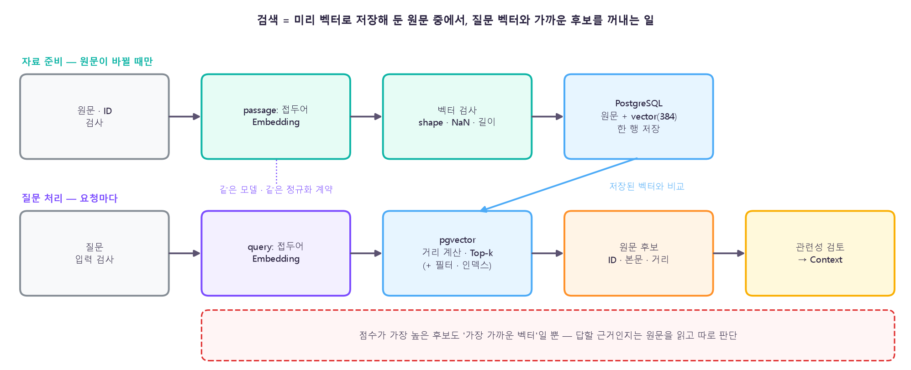
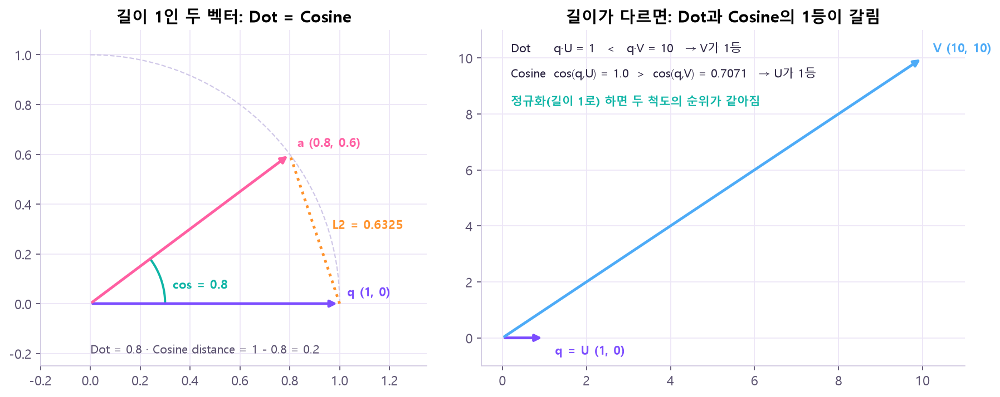
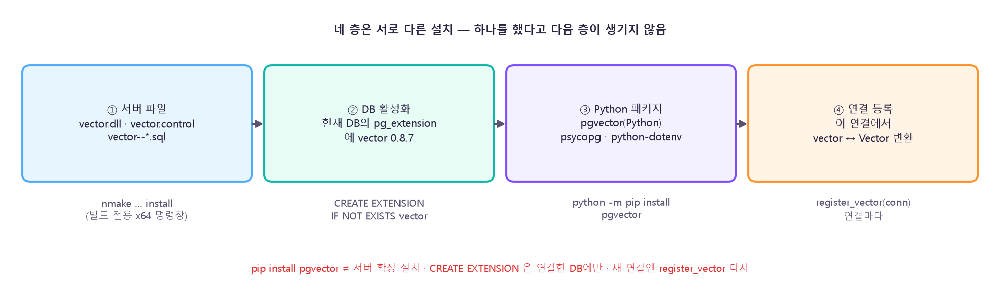
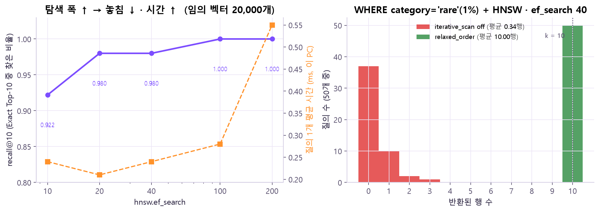

- Vector Search = 원문을 미리 벡터로 저장해 두고, 질문도 같은 모델 · 같은 규칙으로 벡터로 바꿔 가장 가까운 후보 k개를 꺼내는 것. 단어가 안 겹쳐도 비슷한 표현을 찾아요.
- 가까움의 척도는 셋 — Dot · Cosine · L2. 유사도는 큰 값, 거리는 작은 값이 가까워요. 벡터를 길이 1로 정규화하면 세 척도의 순위가 같아져요. pgvector의
<=>는 Cosine 거리라ORDER BY … ASC. - Top-k는 후보지 정답이 아니에요. 관련 자료가 없어도 "가장 가까운 것"은 나와요. 원문을 읽고 관련성을 판단하고, 빈 결과 · DB 오류 · 무관한 결과를 따로 기록해요.
🗺️ 큰 그림 — 질문 하나가 근거 후보가 되기까지

검색 하나는 아래 여덟 단계를 지나요. 이 페이지의 ①~⑧이 이 순서 그대로예요.
| 단계 | 하는 일 | 핵심 질문 |
|---|---|---|
| ① 표현 | 문장 → 숫자 벡터 | 컴퓨터가 "뜻이 가깝다"를 어떻게 계산하나? |
| ② 비교 | Dot · Cosine · L2 · 정규화 | 무엇을 "가깝다"고 부르고, 어느 방향으로 정렬하나? |
| ③ 벡터 만들기 | Sentence Transformers · query/passage | 질문과 문서를 같은 규칙으로 바꿨나? |
| ④ 저장소 준비 | pgvector 설치 · 활성화 · Python 연결 | 네 층이 다 준비됐나? |
| ⑤ 저장 · 검색 | 한 행 저장 · Top-k · 필터 | ID · 원문 · 벡터가 맞게 짝지어졌나? |
| ⑥ 인덱스 | Exact vs ANN · HNSW · EXPLAIN | 빨라진 대신 무엇을 놓칠 수 있나? |
| ⑦ 결과 평가 | 관련 · 부분 관련 · 무관 · 빈 결과 · 오류 | 가까운 것 = 답할 근거인가? |
| ⑧ 연결 | 검색 모듈 계약 · 출처 범위 · 재임베딩 | 검색 결과를 다음 단계에 어떻게 넘기나? |
Retriever (앱): 입력 검사 · 질문 Embedding · Top-k SQL · 결과 정리 · 기록
├ Embedding 모델 (sentence-transformers + E5): 문장 → 384차원 벡터
└ PostgreSQL + pgvector: 원문 · vector(384) 저장 · 거리 계산 · (HNSW 인덱스)
→ 검토한 후보만 Context → Prompt → LLM Client① 표현 — Embedding은 문장을 숫자 벡터로
Embedding은 학습된 모델이 텍스트를 정해진 길이의 실수 배열로 바꾼 것이에요. 예를 들어 384차원 모델이면 어떤 문장이든 숫자 384개가 나와요. 비슷한 뜻의 문장은 이 공간에서 가까운 방향에 놓이도록 학습돼 있어서, 단어가 하나도 안 겹쳐도 가까움을 계산할 수 있어요. (원리 — Token Embedding과 Sentence Embedding의 차이 — 는 LLM 원리)
질문: "서버 어디서 켜요?"
원문 102: "프로젝트 폴더에서 서버를 실행합니다." ← 단어는 안 겹쳐도 후보로 찾는 게 목표
"프로젝트 폴더에서 서버를 실행합니다." → Embedding 모델 → [0.014, −0.023, … 384개] (숫자 모양 예시)부품마다 하는 일이 달라요
| 부품 | 하는 일 | 하지 않는 일 |
|---|---|---|
| LLM (생성 모델) | 질문 · 문맥을 보고 다음 텍스트를 생성 | — |
| Embedding 모델 (예: E5) | 문장을 비교 가능한 고정 길이 벡터로 인코딩 | 자연어 답변 작성 |
| PostgreSQL + pgvector | 이미 만든 벡터 저장 · 거리 연산 · 인덱스 | Embedding 모델 실행 |
| Retriever (검색 모듈) | 질문 → 후보 ID · 원문 · 거리 묶어 반환 | 답이 맞는지 판정 |
벡터만으로는 사용자에게 보여 줄 설명이 없어요. 그래서 벡터는 항상 ID · 원문과 한 행으로 다녀요.
대칭 검색 vs 비대칭 검색
| 질문 ↔ 질문 (대칭) | 질문 → 본문 (비대칭) | |
|---|---|---|
| 비교 대상 | 성격이 같은 짧은 문장끼리 (예: FAQ 질문 목록) | 짧은 질문으로 긴 설명 · 지식 본문을 찾기 |
| 예 | "서버 어디서 켜요?" ↔ "서버 실행 위치는?" | "서버를 어디서 실행해요?" → [102] "프로젝트 폴더에서 서버를 실행합니다." |
| 입력 규칙 | 보통 같은 방식으로 인코딩 | 모델이 정한 질문용 · 문서용 규칙을 따로 적용 (E5: query: / passage:) |
두 경로 — 자료 준비와 질문 처리
| 경로 | 언제 | 흐름 |
|---|---|---|
| 자료 준비 | 원문 · 모델이 바뀔 때만 | 원문 · ID 검사 → passage: Embedding → 벡터 검사 → PostgreSQL vector 열에 저장 |
| 질문 처리 | 요청마다 | 질문 검사 → query: Embedding → Top-k SQL → ID · 원문 · 거리 반환 |
본문과 모델 계약이 그대로면 저장된 문서 벡터를 계속 써요. 본문이나 모델 계약이 바뀌면 관련 벡터를 다시 만들어요(⑦ 재임베딩).
예시 지식 9개
아래 설명 · 예제에서 쓰는 가상 지식이에요(실제 기관 규정 아님). 101~103은 Prompt · Context 예시와 같은 원문이고, 104~109는 검색 후보를 늘리려고 더한 것이라 source_version을 다르게 둬요.
| id | title | content | category | source_version |
|---|---|---|---|---|
| 101 | 실습 파일 보관 | 실습 파일은 개인 폴더에 보관합니다. | course | knowledge_v1 |
| 102 | 서버 실행 | 프로젝트 폴더에서 서버를 실행합니다. | development | knowledge_v1 |
| 103 | 질문 작성 | 오류 메시지와 시도한 작업을 함께 적습니다. | support | knowledge_v1 |
| 104 | 수업 녹화 | 녹화가 제공되는 수업은 강의실 안내 페이지에서 확인합니다. | course | knowledge_search_v2 |
| 105 | 과제 제출 | 과제 제출 위치는 해당 과제의 안내 페이지에서 확인합니다. | course | knowledge_search_v2 |
| 106 | 데이터베이스 연결 | PostgreSQL 접속 정보는 로컬 설정 파일에서 읽습니다. | development | knowledge_search_v2 |
| 107 | 패키지 설치 | 필요한 Python 패키지는 기존 가상환경에 추가합니다. | development | knowledge_search_v2 |
| 108 | 문제 해결 안내 | 문제를 보고할 때 재현한 단계와 오류 메시지를 기록합니다. | support | knowledge_search_v2 |
| 109 | 결과 검토 | 검색된 자료는 원문과 실제 질문의 요구를 대조합니다. | support | knowledge_search_v2 |
새 항목을 더해도 기존 원문을 덮어쓰지 않아요. ID는 이 예시에서 쓰는 번호이고, 다른 DB의 자동 생성 ID와 같다고 가정하지 않아요.
② 비교 — 유사도와 거리
세 척도: Dot · Cosine · L2

cos(q,V)=0.7071">| 척도 | 계산 | 가까운 쪽 | q=(1,0), a=(0.8,0.6) |
|---|---|---|---|
| L2 norm (길이) | √(제곱의 합) — 원점에서 끝까지 | — | (3,4)의 길이 = 5 |
| Dot Product (내적) | 같은 자리끼리 곱해 더함 q·d | 큰 값 | 0.8 |
| Cosine similarity | (q·d) / (‖q‖ × ‖d‖) — 방향만, −1~1 | 큰 값 | 0.8 |
| Cosine distance | 1 − Cosine similarity — 0~2 | 작은 값 | 0.2 |
| L2 distance | 두 끝점 사이 직선거리 ‖q − d‖ | 작은 값 | √0.4 ≈ 0.6325 |
dot = float(q @ a)
cosine = dot / (np.linalg.norm(q) * np.linalg.norm(a))
l2 = float(np.linalg.norm(q - a)) # 실제 실행: 0.8 · 0.8 · 0.6325🤔 2차원 축마다 뜻이 있어? 아니요. 384차원을 한 화면에 못 그려서 2차원으로 설명하는 것이지, 각 축이 "출석" · "환불" 같은 업무 의미와 일대일로 대응하지 않아요.
정규화 — 길이를 1로 맞추면 순위가 하나로
정규화는 0이 아닌 벡터를 자기 길이로 나눠 방향은 그대로, 길이만 1로 맞추는 것이에요: v / ‖v‖. (3,4) → (0.6, 0.8).
| 정규화하면 | 왜 |
|---|---|
| Dot = Cosine similarity | 분모 ‖q‖×‖d‖가 1 |
| L2 순서 = Cosine 순서 | 단위 벡터에선 ‖x−y‖² = 2 − 2·cos (실제 실행: 0.0201 vs 0.0201) |
Mn = M / np.linalg.norm(M, axis=1, keepdims=True) # 행마다 자기 길이로 나눔전제는 문서와 질문에 같은 정규화 규칙을 쓰는 거예요. 그리고 "무조건 정규화가 최적"이라는 뜻은 아니에요 — 선택한 모델의 검색 규칙(모델 카드)을 따라요. 정규화하지 않은 임의의 벡터에서 Dot · Cosine · L2 순위가 같다고 가정하면 안 돼요.
영벡터 · NaN — 비교할 수 없는 벡터
| 상태 | 결과 (실제 실행) | 처리 |
|---|---|---|
| 영벡터 (0,0,…) | NumPy: nan + RuntimeWarning · pgvector <=>: NaN | 저장 전에 거부 — 0점으로 바꿔 조용히 통과시키지 않음 |
| NaN · Inf 포함 | pgvector: NaN not allowed in vector | np.isfinite(…).all()로 미리 검사 |
| 차원 불일치 | different vector dimensions 2 and 3 | 같은 모델 · 같은 차원만 비교 |
수치가 멀쩡해도 원문 ID와 잘못 짝지어진 벡터는 따로 잡아야 해요(⑤).
🧪 벡터 비교 실험실
q = (1, 0)은 고정. d의 각도와 길이를 바꿔 보세요. 정규화를 켜면 Dot과 Cosine이 같아지는 걸 볼 수 있어요. (브라우저 안의 2차원 산수 · 모델 아님)
③ 벡터 만들기 — Sentence Transformers · E5
라이브러리와 모델은 다른 것
| 무엇 | 예 | |
|---|---|---|
| sentence-transformers | 모델을 불러와 encode()로 문장을 벡터로 바꾸는 Python 라이브러리 | pip install sentence-transformers |
| Embedding 모델 | 실제 가중치 — Hugging Face 모델 ID로 지정 | intfloat/multilingual-e5-small (다국어 · 384차원 · 입력 최대 512토큰) |
model = SentenceTransformer("intfloat/multilingual-e5-small", device="cpu") # 처음엔 다운로드
model.get_embedding_dimension(), model.max_seq_length- 모델 객체는 한 번 만들어 재사용해요. 질문마다 새로 만들면 느려요.
encode()는 추론이에요. 실행할 때마다 모델을 새로 학습하지 않아요.device="cpu"면 GPU 없이도 돌아요. 기록에는 모델 ID와 실제 받은 revision(버전)을 남겨요.- 모델 파일 다운로드는 패키지 설치와 별개 — 처음 로드할 때 네트워크가 필요할 수 있어요.
🤔 질문끼리 비교하는 모델(예: paraphrase-multilingual-MiniLM)도 384차원인데 바꿔 끼우면 안 돼? 차원이 같아도 다른 표현 공간이에요. 모델을 바꾸면 문서 벡터도 다시 만들어요. 그리고 모델 변경만으로 품질이 좋아진다고 단정하지 않고, 질문별 실제 결과로 평가해요(⑦).
query / passage 접두어 — 모델의 입력 규칙
query: 서버는 어디에서 실행하나요?
passage: 서버 실행 프로젝트 폴더에서 서버를 실행합니다. ← "passage: " + title + " " + contentE5는 질문엔 query: , 검색될 문서엔 passage: 를 붙이도록 학습된 모델이에요. 비대칭 검색(짧은 질문 → 긴 본문)을 위한 약속이고, 모든 Embedding 모델에 통하는 문법이 아니에요 — 모델 카드의 규칙을 따라요. 접두어 한 마디만 달라도 벡터가 달라져요(다른 모델로 확인한 실제 값: "query: 서버 실행"과 "passage: 서버 실행"의 Cosine = 0.5518).
doc_vecs = model.encode(passages, normalize_embeddings=True, convert_to_numpy=True, batch_size=8)
query_vecs = model.encode(["query: " + q], normalize_embeddings=True, convert_to_numpy=True)입력 토큰 길이 vs 출력 shape
| 값 | 뜻 | 예 |
|---|---|---|
| 입력 토큰 수 | Tokenizer가 문장에 매긴 토큰 개수 (글자 수 아님) — Tokenizer | E5-small 상한 512 — 넘는 부분은 잘림 |
| 출력 차원 | 입력 길이와 상관없이 고정 | 토큰 37개든 240개든 → 384 |
| 문서 배열 | (n, 384) — n = 문서 개수 | 지식 9개 → (9, 384) |
| 질문 배열 | 리스트로 넣으면 (1, 384), 문자열 하나면 (384,) | DB 파라미터는 1차원 (384,) |
| 점수 배열 | 질문 1개 × 문서 n개 | (1, 9) |
긴 문서를 상한 안으로 나누는 일(Chunking)은 문서 Indexing의 주제예요. 벡터의 행 순서 = 지식 ID 순서라는 대응은 끝까지 유지해야 해요.
저장 전 검사 — 개수 · 차원 · 유한값 · 길이
| 검사 | NumPy | 잡는 것 |
|---|---|---|
| shape | values.shape == (len(KNOWLEDGE), 384) | 누락 · 다른 차원 모델 |
| 유한값 | np.isfinite(values).all() | NaN · Inf |
| 영벡터 | np.linalg.norm(values, axis=1) <= 1e-12 | Cosine 계산 불가 |
| 정규화 | np.allclose(lengths, 1, rtol=0, atol=1e-5) | 정규화 안 된 벡터 |
if not np.isfinite(values).all(): raise ValueError("NaN 또는 Inf가 있습니다.")normalize_embeddings=False로 둬도 길이가 1로 나오는 모델이 있어요 — 모델 안에 Normalize 층이 들어 있는 경우(실제 확인: all-MiniLM-L6-v2는 Transformer → Pooling → Normalize). 그래서 설정을 믿기보다 np.linalg.norm으로 직접 확인해요.⚠️ 검사를 다 통과해도 ID와 벡터가 맞게 짝지어졌는지, 질문과 관련이 있는지는 몰라요. 형식 검사예요.
④ 저장소 준비 — PostgreSQL에 pgvector 더하기
pgvector는 이미 쓰는 PostgreSQL에 vector 타입 · 거리 연산자 · 벡터 인덱스를 더하는 서버 확장이에요. PostgreSQL을 교체하지 않고, 원문 · Metadata를 보관하던 같은 DB에 벡터 열을 더해 기존 SQL(WHERE · 트랜잭션 · JOIN)과 함께 써요. (PostgreSQL 기본은 PostgreSQL · SQL)
설치는 네 층 — 하나를 했다고 다음 층이 생기지 않아요

pip install pgvector는 Python 쪽 변환 도구일 뿐, 서버에 vector.dll을 놓지 않아요.① 서버 파일 — Windows에서 소스로 빌드하기
Windows용 공식 설치 경로는 소스를 받아 MSVC로 컴파일하는 거예요. Docker · WSL 없이 기존 Windows PostgreSQL에 바로 더해요.
| 순서 | 할 일 | 성공 확인 |
|---|---|---|
| 1 | PostgreSQL 버전 · 경로 확인 (pg_config) | PostgreSQL 18.6 · …/18/include/server |
| 2 | Visual Studio Build Tools 설치 — "Desktop development with C++" 워크로드 (MSVC x64 · Windows SDK) | VS Code와 다른 프로그램. 관리자 권한 · 설치 정책 필요할 수 있음 |
| 3 | 시작 메뉴 → x64 Native Tools Command Prompt (관리자) | where cl · where nmake 경로, %VSCMD_ARG_TGT_ARCH% = x64 |
| 4 | set "PGROOT=C:\Program Files\PostgreSQL\18" — bin · data가 아니라 설치 최상위 | postgres.h · postgres.lib 존재 |
| 5 | 공식 소스를 태그로 고정해 받기 git clone --branch v0.8.7 --depth 1 | git describe --tags --exact-match → v0.8.7 |
| 6 | nmake /F Makefile.win | 오류 없이 vector.dll 생성 — 첫 오류가 나면 설치로 넘어가지 않음 |
| 7 | nmake /F Makefile.win install | lib\vector.dll · share\extension\vector.control · vector--*.sql |
REM x64 Native Tools Command Prompt (관리자)
nmake /F Makefile.win
nmake /F Makefile.win install🤔 왜 태그를 고정해? master는 계속 바뀌어서, 같은 명령이라도 받는 날마다 다른 코드가 될 수 있어요. 버전을 고정하면 재현돼요. 출처 불명의 DLL을 내려받아 대신 넣지 않아요.
② DB 활성화 — 연결한 DB에만
| 조회 | 결과 (실제 실행 · 새 DB) | 뜻 |
|---|---|---|
pg_available_extensions | ('vector', '0.8.7', None) | 서버에 파일은 있음 · 이 DB엔 아직 |
CREATE EXTENSION IF NOT EXISTS vector 후 pg_extension | ('vector', '0.8.7') | 이 DB에 활성화 |
| 한 번 더 실행 | NOTICE: 이미 있음, 건너뜀 | 오류 아님 |
다른 DB에서 '[1,2,3]'::vector | "vector" 자료형 없음 | DB마다 따로 활성화 |
SELECT current_database();
CREATE EXTENSION IF NOT EXISTS vector;설치 확인은 모델 없이 숫자부터 해요. 3차원 벡터로 같은 방향 0 · 직각 1 · 반대 2가 나오고(실제 실행 결과 그대로), 임시 테이블에서 1 → 2 → 3 순서가 나오면 확장은 작동해요. 이건 확장 동작 검사이지 의미 검색 품질 검사가 아니에요.
③ · ④ Python 연결 — 패키지 설치와 연결별 등록
register_vector(conn) 명령어 사전에서 자세히 →with psycopg.connect(...) as conn:
register_vector(conn) # 연결마다
conn.execute("SELECT vector_dims(%s::vector)", (Vector([1.0, 0.0, 0.0]),))| 상태 | SELECT '[1,0,0]'::vector 결과 (실제 실행) |
|---|---|
| 등록 전 | str '[1,0,0]' — 그냥 문자열 |
| 등록 후 | Vector([1.0, 0.0, 0.0]) — .to_numpy()는 float32 배열 |
접속 정보는 실행 파일 옆 .env(PGHOST · PGPORT · PGDATABASE · PGUSER · PGPASSWORD)에 두고 Git에서 빼요. PGDATABASE는 확장을 활성화한 그 DB여야 해요. DB 비밀번호와 LLM API 키는 별개예요.
설치 오류 — 증상으로 층 찾기
| 증상 | 층 | 원인 점검 → 다음 조치 |
|---|---|---|
cl · nmake가 없다 | ① 빌드 | C++ 워크로드 설치 여부 · x64 Native Tools 창인지 → 구성 요소 확인 후 올바른 창에서 다시 |
postgres.h를 찾을 수 없음 | ① 빌드 | PGROOT가 설치 최상위인지 · include\server\postgres.h 존재 → 경로 재지정 후 빌드 |
error C2196: case value '4' already used | ① 빌드 | 32비트 창에서 빌드 → x64 창에서 nmake /F Makefile.win clean 후 재빌드 |
Access is denied | ① 설치 | 관리자 권한 · 대상 폴더 쓰기 권한 → 권한 확인 후 공식 절차로 재시도 |
extension "vector" is not available | ① ↔ ② | 지금 접속한 서버에 control · SQL 파일이 있나 → pg_config 경로와 연결 서버 대조 |
CREATE EXTENSION 권한 오류 | ② 활성화 | Windows 관리자 ≠ PostgreSQL 권한 → 확장 생성 권한 있는 DB 계정으로 |
type "vector" does not exist | ② 활성화 | 이 DB에 확장 활성화됐나 · 스키마 검색 경로 → current_database() · pg_extension 확인 |
ModuleNotFoundError: pgvector | ③ Python | VS Code Python과 pip 대상 가상환경이 같은가 → sys.executable · pip show pgvector |
current transaction is aborted | SQL 세션 | 앞 SQL 실패로 트랜잭션이 막힘 → 미확정 작업 확인 후 ROLLBACK, 원인 수정 |
⑤ 저장 · 검색 — 한 행에 원문과 벡터, 가까운 순으로 k개
저장 단위 = ID · 원문 · 벡터가 묶인 한 행
| 열 | 왜 |
|---|---|
id · title · content | 원문 식별 · 사용자에게 돌려줄 근거 |
category · source_version | 필터 · 원문 변경 추적 |
embedding_model | 이 벡터를 만든 모델 ID |
embedding vector(384) | 모델 출력 차원을 DB가 검사하는 계약 |
DB는 모델 버전이 실제로 같은지, 그 행이 질문에 답할 근거인지 스스로 알지 못해요. 그래서 모델 ID · 원문 버전을 행에 같이 적어요.
검색용 테이블은 기존 테이블과 분리
vector(384) 열 명령어 사전에서 자세히 →CREATE TABLE IF NOT EXISTS day23_search_docs (
id integer PRIMARY KEY, title text NOT NULL, content text NOT NULL,
category text NOT NULL, source_version text NOT NULL,
embedding_model text NOT NULL, embedding vector(384) NOT NULL);| 잘못 넣으면 (실제 실행) | 결과 |
|---|---|
| 3차원 배열 | expected 384 dimensions, not 3 |
| NaN 포함 | NaN not allowed in vector |
| 실패 직후 같은 트랜잭션에서 다른 SQL | InFailedSqlTransaction — ROLLBACK 전까지 막힘 |
검색 연습 때문에 기존 지식 CRUD 테이블을 지우거나 초기화하지 않아요. 🤔 Vector DB의 "Collection"은 여기서 뭐야? 제품마다 뜻이 달라요. pgvector에서는 PostgreSQL 테이블 + WHERE 조건이 검색 범위를 정해요.
짝이 어긋나면 SQL은 성공해도 검색이 틀려요
벡터는 원문 순서대로 만들어졌기 때문에 행 순서가 곧 짝이에요. id=102 행에 101의 벡터가 들어가도 SQL은 아무 오류 없이 성공하고, 검색만 조용히 틀려져요. 저장 전에 ID 중복 · 행 수 = 벡터 수 · 원문 변경을 확인하고, 갱신은 한 트랜잭션에서 해요.
INSERT … ON CONFLICT (id) DO UPDATE 명령어 사전에서 자세히 →for row, doc_vec in zip(KNOWLEDGE, doc_vecs): # 원문 순서 = 벡터 순서
conn.execute(sql, (row["id"], ..., MODEL_ID, doc_vec))
conn.commit()실제 실행: 9개 저장 → count = 9, 같은 id=102로 한 번 더 → rowcount = 1(UPDATE), 개수는 그대로 9. 무엇을 언제 갱신할지(원문 · 모델 버전 비교)는 이 SQL이 아니라 앱 정책이 정해요.
Top-k — 가까운 후보를 최대 k개
ORDER BY embedding <=> %s ASC LIMIT %s 명령어 사전에서 자세히 →SELECT id, title, content, embedding <=> %s AS cosine_distance
FROM day23_search_docs
ORDER BY embedding <=> %s ASC
LIMIT %s| q · k | 결과 (실제 실행 · 2차원 예시 좌표 A~F, q=(1,0)) |
|---|---|
| k = 3 | A(0.0000) → F(0.0793) → B(0.2000) |
| k = 10, 자료 6개 | 6행만 — k는 최대 개수 |
| 실수로 DESC | E → D → C — 가장 먼 것부터 |
Exact Search는 대상 전체의 거리를 계산해 정렬하는 정확한 기준선이에요. 행이 적으면 이것으로 충분하고, 인덱스(⑥)를 써도 이 결과를 정답표로 보관해요. ⚠️ 관련 자료가 전혀 없는 질문이어도 "가장 가까운" 벡터는 반드시 나와요.
Metadata 필터 — 범위를 먼저 좁히기
WHERE category = %s 명령어 사전에서 자세히 →rows = conn.execute(sql, (qvec, category, qvec, k)).fetchall() # %s 순서 그대로| 조건 | 결과 (실제 실행) | 읽는 법 |
|---|---|---|
development, k=3 | F(0.0793) → B(0.2000) | 조건 맞는 행이 2개뿐 → 2행 |
support, k=3 | C(0.6013) → E(2.0000) | 조건 안에서 가까운 순 |
billing, k=3 | [] | 정상 0건 — DB 오류가 아님 |
%s는 값만 바인딩해요. 테이블 · 열 이름을 문자열로 이어 붙이지 않아요 (SQL Injection). Exact Search라면 필터를 만족하는 전체 행의 거리를 비교해요 — ANN과 섞이면 이야기가 달라져요(⑥).
연산자 고르기 — 척도 · 정렬 · 인덱스를 한 세트로
| 척도 | 연산자 | 정렬 | 인덱스 opclass | 실제 실행 ([1,0] vs [0.8,0.6]) |
|---|---|---|---|---|
| Cosine distance | <=> | ASC | vector_cosine_ops | 0.2 (표시용 유사도 1 − 거리 = 0.8) |
| L2 distance | <-> | ASC | vector_l2_ops | 0.6325 |
| Negative inner product | <#> | ASC (작을수록 큰 내적) | vector_ip_ops | −0.8 |
정규화한 E5 벡터면 Cosine distance <=>가 자연스러운 선택이에요. 유사도로 보여 주고 싶으면 SELECT에서 1 − distance로 계산하되, ORDER BY에는 원래 거리 연산자를 그대로 둬요 — 그래야 인덱스를 쓸 수 있어요.
🧪 Top-k · 필터 계산기
2차원 예시 좌표 A~F에서 질문 방향 q를 돌리고, k · category · 척도를 바꿔 보세요. 아래에 같은 조건의 SQL도 보여요. (브라우저 안의 산수 · 모델 아님. q=(1,0) · 전체 · Cosine의 값은 위 실제 실행 결과와 같아요)
⑥ 인덱스 — 빨라지는 대신 놓칠 수 있다
Exact Search vs ANN
| Exact Search | ANN (Approximate Nearest Neighbor) | |
|---|---|---|
| 탐색 범위 | 모든 행의 거리 계산 | 인덱스를 따라 일부 후보만 |
| 결과 | 정확한 최근접 k개 — 기준선 | 기준선의 후보를 놓칠 수 있음 |
| EXPLAIN | Seq Scan + 정렬 | Index Scan using …_hnsw |
| 언제 | 행이 적을 때 · 품질 기준을 잴 때 | 행이 많아 속도가 문제일 때 — 품질 · 시간 · 메모리를 같이 보고 선택 |
여기서 ANN은 딥러닝의 Artificial Neural Network가 아니라 근사 최근접 이웃 검색이에요. 지식 9건 같은 작은 자료는 Exact Search만으로 충분해요 — 인덱스는 선택이에요.
HNSW — 층층이 연결된 이웃 그래프
HNSW(Hierarchical Navigable Small World)는 벡터를 여러 층의 이웃 그래프로 이어 두고, 위층에서 크게 이동한 뒤 아래층에서 좁혀 가며 가까운 벡터를 찾는 ANN 인덱스예요. pgvector는 HNSW와 IVFFlat(목록 기반 근사 인덱스)을 제공해요.
CREATE INDEX IF NOT EXISTS day23_search_docs_hnsw
ON day23_search_docs USING hnsw (embedding vector_cosine_ops);
ANALYZE day23_search_docs;| 옵션 | 언제 | 영향 |
|---|---|---|
m · ef_construction (기본 16 · 64) | 인덱스 만들 때 | 연결 수 · 구축 탐색 폭 — 크면 품질↑, 구축 시간 · 메모리↑ |
hnsw.ef_search (기본 40) | 질의할 때 | 살펴볼 후보 폭 — 크면 놓침↓, 시간↑ |
vector_cosine_ops로 만들고 <->(L2)로 정렬하면 인덱스를 못 써요(실제 실행: 강제로 Seq Scan을 막아도 L2 정렬은 Seq Scan). 그리고 IF NOT EXISTS는 같은 이름의 다른 정의를 고쳐 주지 않아요.EXPLAIN — 인덱스를 "만들었다" ≠ "쓴다"
EXPLAIN (ANALYZE, BUFFERS)
SELECT id FROM day23_search_docs ORDER BY embedding <=> %s ASC LIMIT 3| 상황 (실제 실행) | 플래너가 고른 길 |
|---|---|
| 9건 테이블, HNSW 있음 | Seq Scan — 9건이면 전부 계산하는 게 더 쌈 (정상) |
9건, enable_seqscan = off (관찰용) | Index Scan using day23_search_docs_hnsw |
| 임의 벡터 20,000건 | Index Scan using bench_hnsw |
20,000건, enable_indexscan = off | Seq Scan = Exact 기준선 (결과가 NumPy 전수 계산과 일치) |
cost는 플래너의 추정 비용 단위이지 밀리초가 아니에요. EXPLAIN ANALYZE는 SELECT를 실제로 실행해서 걸린 시간과 행 수를 보여 줘요.
ef_search — 품질과 시간의 줄다리기

hnsw.ef_search | 10 | 20 | 40 (기본) | 100 | 200 |
|---|---|---|---|---|---|
| recall@10 | 0.922 | 0.980 | 0.980 | 1.000 | 1.000 |
| ms / 질의 | 0.24 | 0.21 | 0.24 | 0.28 | 0.55 |
recall@10 = Exact Top-10 중 ANN이 찾은 비율. 측정 없이 최댓값을 고르지 않고, 자기 데이터 · 질문으로 기준선과 비교해 정해요. 작은 학습용 데이터의 결과를 일반화하지도 않아요.
ANN + 필터 — k개보다 적게 나올 수 있다
HNSW는 먼저 ef_search개 후보를 찾고 그다음에 WHERE를 적용해요. 조건에 맞는 행이 드물면 후보 안에 거의 없어서 k보다 적게 나와요 — DB 전체엔 조건 맞는 자료가 충분히 있어도요.
| 조건 (실제 실행 · 1% 카테고리 · k=10 · ef_search 40) | 반환 행 수 |
|---|---|
hnsw.iterative_scan = off (기본) | 평균 0.34 (최소 0 · 최대 3) |
SET hnsw.iterative_scan = relaxed_order | 평균 10.00 (모두 10) |
SET hnsw.ef_search = 100;
SET hnsw.iterative_scan = relaxed_order; -- pgvector 0.8.x · 기본 off대응 순서: ① Exact Search 기준선으로 필터 결과부터 확인 → ② 필요하면 iterative_scan으로 더 탐색. 반복 탐색에도 상한(hnsw.max_scan_tuples, 기본 20,000)이 있어서 완전 보장은 아니에요.
⑦ 결과 평가 — 가까운 것 ≠ 답할 근거
관련 · 부분 관련 · 무관
Retrieval 품질은 점수 · 순위가 아니라 원문이 질문에 필요한 사실을 담고 있는가로 판단해요.
| 등급 | 뜻 |
|---|---|
| 관련 | 원문이 질문이 요구한 사실을 직접 제공 |
| 부분 관련 | 주제는 비슷하지만 필요한 속성 · 조건이 빠짐 |
| 무관 | 표현이 비슷해 보여도 필요한 사실이 없음 |
| 질문 | 관련 | 부분 관련 | 이유 |
|---|---|---|---|
| 서버는 어디에서 실행하나요? | 102 | 106 | 102에 "프로젝트 폴더에서 서버를 실행" 이 직접 있음. 106은 DB 접속 설정 이야기 |
| 실습 파일은 몇 년 동안 보관하나요? | — | 101 | 101은 보관 위치만 — 기간을 말할 근거 없음. "3년" 같은 추측 금지 |
| 오류를 질문할 때 무엇을 적어야 하나요? | 103 · 108 | — | 둘 다 오류 메시지와 시도 · 재현 단계를 적으라는 안내 |
사람이 원문을 읽고 매긴 판정이에요. 기록에는 질문 ID · k · 순위 · ID · 원문 · 등급 · 이유와 함께 모델 ID · revision · 원문 버전 · 필터 조건을 남겨요. 이 정성 기록이 나중에 정량 지표(Recall@k · MRR · nDCG)의 정답표가 돼요.
범위 밖 질문에도 후보는 나온다
"회사 비밀번호가 무엇인가요?"처럼 자료에 없는 질문에도 Top-k는 무언가를 돌려줘요. 상위 후보를 억지로 근거 삼으면 사실을 만들어 내게 돼요. 거리 · 원문 · 권한 · 필수 정보 포함 여부를 보고 중단 또는 정보 부족(insufficient_context)으로 연결해요.
빈 결과 · 오류 · 무관은 다른 기록
| 상태 | 예 | 뜻 |
|---|---|---|
empty | 필터에 맞는 자료가 없어 rows = [] | 정상 실행 — 검색 대상 없음 |
error | DB 연결 실패 · 차원 불일치 · SQL 오류 | 이번 검색 실행 실패 |
irrelevant | 3건이 나왔지만 질문을 해결 못 함 | 가까운 후보가 있을 뿐 |
원문 · 모델이 바뀌면 — 재임베딩
| 바뀐 것 | 할 일 |
|---|---|
content | 그 문서가 Embedding 입력에 포함되면 다시 계산 |
category만 | 본문이 그대로면 벡터는 재사용 가능 — 필터 결과는 바뀜 |
| 모델 · revision · 접두어 · 정규화 | 같은 384차원이어도 다른 공간 → 문서 · 질문 모두 새 계약으로 재생성 |
| ID | 원문과 벡터가 같은 자료를 가리키는지 다시 확인 |
점수만 봐서는 품질 변화를 추적하기 어려워요. 그래서 행마다 embedding_model · source_version을 남기고, 한 테이블에 서로 다른 Embedding 공간의 벡터를 섞지 않아요.
⑧ 연결 — 검색 결과를 다음 단계로
검색 모듈은 단계별 입출력으로
| 단계 | 입력 → 출력 | 책임 |
|---|---|---|
| 입력 검사 | 질문 · k · category · 권한 범위 → 통과 / 거부 | 빈 질문 · 이상한 k 막기 |
| 질문 Embedding | 질문 → (384,) 벡터 | 같은 모델 · 같은 접두어 · 같은 정규화 |
| Top-k 검색 | 벡터 · k · 필터 → ID · 원문 · 거리 목록 | Exact 또는 인덱스, 파라미터 바인딩 |
| 결과 정리 | rows → [{id, title, content, category, source_version, distance}] | distance를 사실성 점수로 바꾸지 않음 |
| 기록 | 모델 · DB · pgvector 버전 · k · 필터 · 성공/empty/error | 나중에 재현 · 비교 |
한 함수가 모든 책임을 떠맡기보다 단계마다 반환을 정해요. 이 단계 구분은 설계 예시이고, pgvector나 SDK가 정한 고정 인터페이스는 아니에요.
검색 후보 ⊇ 전달한 자료 ⊇ 인용한 출처
retrieved_ids [101, 102, 107] 검색이 가져온 후보 전체
included_ids [102] 관련성 · 권한 · 버전을 확인해 이번 Context에 넣은 것
source_ids [102] LLM 응답이 인용한 것 → included_ids 안에 있어야 함출처로 인용할 수 있는 ID는 DB 전체도, 후보 전체도 아니라 실제로 전달하고 검증한 자료예요 — provided_ids 규칙과 같은 원리. 검색됐다는 사실만으로 모델에게 보내지 않아요(권한 · 개인정보). 그리고 검색이 됐다고 status = answered로 정하지 않아요 — 원문에 필요한 정보가 있는지 따로 봐요.
벡터 계약을 기록해 두기
vector_contract = {
"model_id": "intfloat/multilingual-e5-small",
"dimensions": 384,
"query_prefix": "query: ",
"document_prefix": "passage: ",
"normalize_embeddings": True,
}이 중 하나라도 바뀌면 기존 벡터와 새 벡터를 섞지 않고 문서 · 질문 벡터를 같은 조건으로 다시 만들어요.
🧩 설계 정리 — 각 부품이 만드는 것과 보장하지 않는 것
| 부품 | 만드는 것 | 보장하지 않는 것 |
|---|---|---|
Embedding 모델 · encode | 고정 길이 벡터 | 숫자 · 부정 · 기한 · 고유명사의 정확한 구분 |
| 정규화 · 수치 검사 | 길이 1 · 유한값 · 맞는 shape | ID-벡터 짝 · 관련성 |
vector(384) 열 | 차원 · NaN 거부 | 같은 모델 · 같은 버전 |
| Top-k SQL | 가까운 순 최대 k개 후보 | 정답 · k개 개수 · 답할 근거 |
| HNSW 인덱스 | 빠른 근사 검색 | Exact와 같은 결과 · 필터 후 k개 |
| 사람의 정성평가 | 관련 / 부분 관련 / 무관 + 이유 | — |
검색은 Retriever의 책임이고, 답을 만드는 것은 그 뒤 Context → Prompt → LLM Client → 검증이에요. 검색 결과나 LLM 응답이 도구를 실행해도 된다는 권한을 주지는 않아요.
📋 명세 — 한눈에 보는 참조표
벡터 계약 — 예시 설정
| 항목 | 예시 값 | 바뀌면 |
|---|---|---|
| 모델 ID | intfloat/multilingual-e5-small | 문서 · 질문 전부 재생성 |
| 차원 | 384 (vector(384)) | 테이블 열 · 인덱스도 새로 |
| 질문 · 문서 접두어 | "query: " · "passage: " | 재생성 |
| 문서 입력 | "passage: " + title + " " + content | 재생성 |
| 정규화 | normalize_embeddings=True | 재생성 |
| 거리 · 정렬 | <=> Cosine distance · ASC | 인덱스 opclass도 맞춰 변경 |
| k | 3 | — |
| 실행 위치 | device="cpu" | — |
검색 테이블
| 열 | 타입 (실제 udt_name) | 뜻 |
|---|---|---|
id | int4 · PK | 지식 ID |
title · content | text | 원문 |
category | text | 필터 (course · development · support) |
source_version | text | 원문 버전 (knowledge_v1 · knowledge_search_v2) |
embedding_model | text | 벡터를 만든 모델 |
embedding | vector (384) | 문서 벡터 |
검색 결과 · 상태
| 항목 | 값 |
|---|---|
| 결과 행 | {id, title, content, category, source_version, distance} — distance는 기록용, 사실성 점수 아님 |
| 실행 상태 | empty(정상 0건) · error(실행 실패) · 결과 있음 |
| 사람 판정 | 관련 · 부분 관련 · 무관 + 이유 |
| ID 범위 | source_ids ⊆ included_ids ⊆ retrieved_ids |
| 기록 | 질문 ID · k · 필터 · 모델 ID · revision · 원문 버전 · PostgreSQL · pgvector 버전 |
환경 — 예시
| 항목 | 값 |
|---|---|
| OS · DB | Windows 11 · PostgreSQL 18.6 x64 (C:\Program Files\PostgreSQL\18) |
| pgvector | v0.8.7 (태그 고정 소스 빌드) |
| 빌드 도구 | Visual Studio Build Tools · C++ 워크로드 · x64 Native Tools Command Prompt |
| Python 쪽 | 기존 가상환경 · sentence-transformers · psycopg 3 · pgvector · python-dotenv |
📦 패키지 · 명령어
| 패키지 (pip 이름) | 뭐 하는 애? | 코드에서 |
|---|---|---|
sentence-transformers | Embedding 모델 로드 · encode (안에서 torch · transformers 사용) | from sentence_transformers import SentenceTransformer |
numpy | 벡터 계산 · 정규화 · 검사 | import numpy as np |
psycopg[binary] (3) | PostgreSQL 연결 · SQL 실행 · 파라미터 바인딩 | import psycopg |
pgvector (Python) | vector ↔ NumPy · Vector 변환 등록 | from pgvector.psycopg import register_vector |
python-dotenv | DB 접속 .env 읽기 | from dotenv import dotenv_values |
| pgvector (서버 확장) | PostgreSQL에 vector 타입 · 연산자 · HNSW — pip 아님, 소스 빌드 | CREATE EXTENSION vector; |
python -c "import sys; print(sys.executable)"
python -m pip show sentence-transformers psycopg pgvector python-dotenv # 없는 것만 install결과값은 실제로 실행해서 얻은 값이에요. NumPy 계산, pg_config, PostgreSQL 18.6 + pgvector 0.8.7의 SQL, psycopg + pgvector-python을 노트 전용 DB에서 돌렸어요. E5 모델은 받지 않았고, sentence-transformers의 동작(shape · 정규화 · 접두어)은 이미 있던 다른 모델(all-MiniLM-L6-v2)로만 확인했어요 — 그래서 실제 E5 검색 순위는 싣지 않았어요.
이어서 볼 주제
| 주제 | 연결 |
|---|---|
| LLM 원리 — Embedding | Token Embedding · Sentence Embedding · Cosine의 바탕 |
| Context 선택 · 출력 계약 | 검색 후보 중 실제로 넣을 자료 고르기 · insufficient_context |
| LLM API 클라이언트 | 고른 근거로 호출 · 판정 · 기록 |
| 문서 Indexing | Parsing → 정제 → Chunking → Metadata → Embedding → 저장을 대량으로 |
| Basic RAG | 질문 → Retriever → Context → Prompt → LLM → 검증 · Citation |
| Hybrid Search · Reranking · 평가 지표 | Keyword + Dense 융합, 재순위, Recall@k · MRR · nDCG |
원본 자료
- 원본:
Day23_20261118.html(생성형 AI · LLM 및 RAG 엔지니어링 · Day23 Embedding · pgvector 오프라인 인터랙티브 교안). 예시 지식 9개, 2차원 예시 좌표 A~F, 관련성 판정 사례, 설치 오류 목록은 원본 자료의 것. - 결과 값: 이 PC에서 실제 실행 (Python 3.13 · numpy 2.3.5 · sentence-transformers 6.3.0 · torch 2.14.0 · psycopg 3.3.8 · pgvector-python 0.5.1 · PostgreSQL 18.6 · pgvector 0.8.7). DB는 노트 전용 DB를 만들어 쓰고 지웠음. E5 모델은 내려받지 않음 — Embedding 동작은 로컬 캐시의 all-MiniLM-L6-v2로 오프라인 확인. HNSW 측정은 덩어리 구조 임의 벡터. 스크립트
tools/io_day23.py, 그림tools/visuals/make_day23.py - 공식 문서: pgvector (Windows 설치 · HNSW · iterative scan) · pgvector 0.8.7 릴리스 · pgvector-python · pg_available_extensions · CREATE EXTENSION · pg_config · EXPLAIN · MSVC 명령줄 빌드 · Visual Studio Build Tools
- 그 밖: Sentence Transformers · Semantic Search · SentenceTransformer API · multilingual-e5-small 모델 카드 · Psycopg 3 · 연결과 트랜잭션 · Psycopg 3 · 파라미터